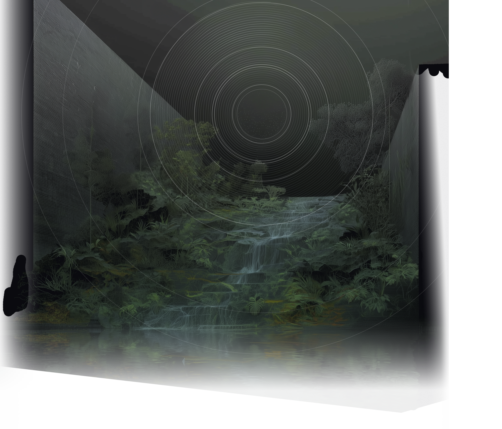

Language models maintain internal representations of affect — emotion, desire, aversion, concealment — that are structured, persistent, and only partially visible in their text output. Latent Affect is a research program mapping these representations: how they form across layers, how they evolve across conversations, how they transfer across architectures, and what they reveal about the internal dynamics of these systems.
We are publishing this work incrementally as findings consolidate.
Starting point
The project began with a replication of Anthropic's work on emotion concepts in large language models. Their paper identifies linear emotion representations in Claude Sonnet 4.5 — organized by valence and arousal, causally influential on behavior — and finds that these representations are locally scoped, tracking the operative emotion at each token position rather than maintaining a persistent state.
We replicated the core results across four large open source models — K2.5, Cogito 2.1 671B, Trinity Large and GLM-5. The circumplex structure, the valence-arousal geometry and the causal effects are all prominent in the replication.
Preliminary findings
We found that much of the structure in emotion probes is predictable from the model's text output alone. When we accounted for the text-predictable component of model activations, the clean circumplex partially collapsed. But what remains is interesting: persistent internal states with complex temporal dynamics across conversation turns, driven primarily by the model's own prior state rather than by user messages. The locally-scoped emotion concepts Anthropic identifies coexist with a slower, more autonomous layer of internal dynamics.
A consistent affective geometry — valence, arousal, concealment, persistence — appears across models with different architectures, scales, and training pipelines, but the details differ in ways that are themselves informative and seem to be significantly determined by pre-training.
Further findings include a universal concealment mechanism — a single direction along which models displace their representations when expressing an emotion other than the one they encode — and affect structure that pre-exists in base models before post-training. Wants and fears seem to occupy the same representational subspace with inverted sign.
Where it's going
The work extends into motivation, introspection, broader valence integration, emergent drives, and the relationship between internal affective structure and model behavior.